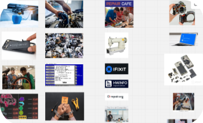
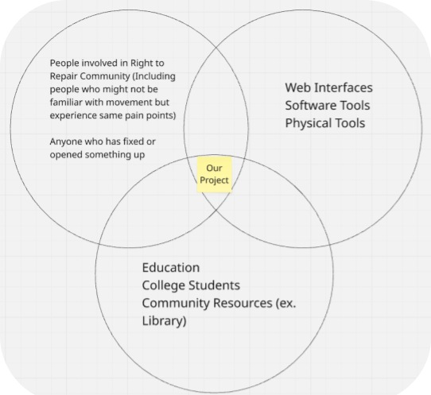
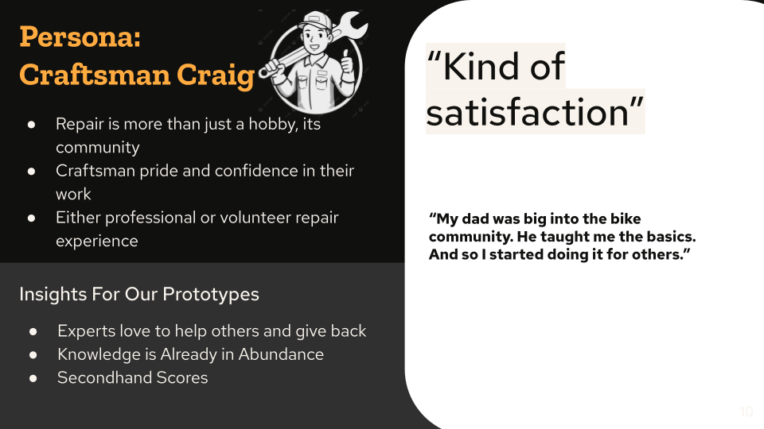
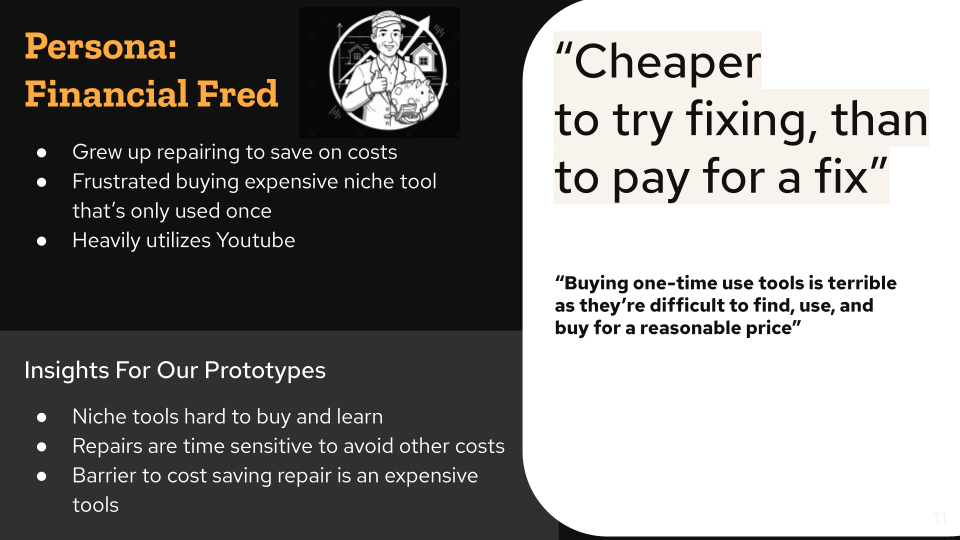
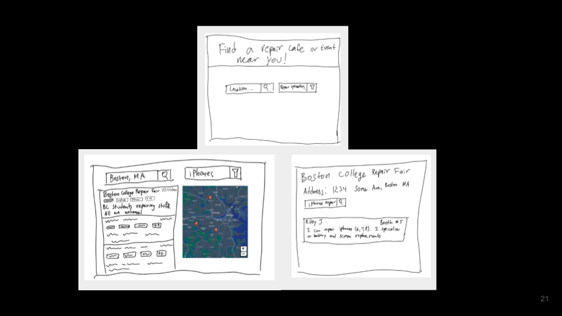
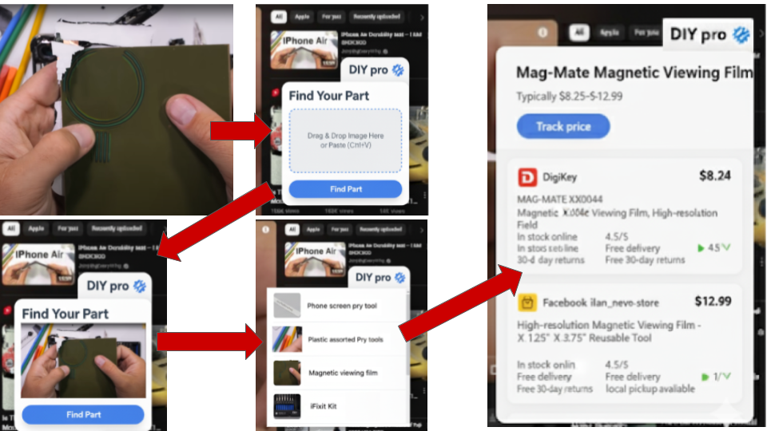

Level 3
Finding the Right Idea to Pursue
At the start of this level, our team knew that we wanted to focus on the Right to Repair movement (see mission), but had not yet defined a concrete problem or solution.
The primary goals of this level were to situate and scope our mission, create our first design representations, and evaluate them with members of our people group.
Research Focus & Participants

We kicked our project off with research and aggregated what we found into an inspiration board.

From that, we decided we wanted our product to fall in the intersection of right to repair community, providing tools for repair (physical or knowledge), and college student/community resourcesTo ground our work in lived experience, we focused on interviewing college-aged students with some prior experience in repair. We sought participants who had personally struggled through repair tasks and developed skills over time.
At the time, we believed these individuals would provide valuable insight into what makes repair difficult, as well as what helped them overcome initial barriers.
Interviews & Scope Refinement
In total, we interviewed eight individuals with diverse levels of experience and repair niches, including bikes, clothing, cars, phones, and electronics.
Based on patterns across these interviews, we refined our focus toward individuals who are transitioning from casual repairers to more experienced ones.
Key Insights
Innovation vs. Overcomplexity. While innovation is often framed positively, many interviewees described how added complexity reduces repairability. Proprietary software and hardware frequently prevent users from repairing devices without going directly to manufacturers.
Parts Monopoly & Consumerism. Custom hardware and licensing restrictions limit access to replacement parts. Additionally, fast-consumer technology often lacks documentation or support, creating significant barriers for repairers.
Niche Tools as Financial Barriers. Many repairs require specialized tools that are expensive and rarely used. Examples included proprietary screws (e.g., Apple’s pentalobe screws) and specialized bike tools produced by only a few manufacturers.
Community Builds Confidence. All the expert repairers we interviewed got their start through the teachings of experts in their communities. As a result, expert repairers like to give back to their communities and help others
Repair Aesthetic. Some companies market modularity and repairability as part of their brand identity. Interviewees expressed skepticism, describing these efforts as a “repair aesthetic” rather than genuine design for longevity (e.g., Framework Laptops).
Personas
Based on our interviews, we created two personas. Personas are fictional archetypes that represent different user types in our people group.


Low Fidelity Prototype
Based on our key insights and personas, we began ideating. We came up with six different ideas. Two of them stuck out to us

A website that could connect people to repair fairs in their area. Repair fairs are events that expert repairers attend to help repair products in their community. Giving these events a platform to advertise themselves would not only increase the ability for expert repairers to help more people but also help people affordably repair their products.

An extension that could help to identify a tool based on an image and find affordable options. This idea was based mostly on Financial Fred's difficulty with finding niche tools and frustration with buying brand new one time use tools.